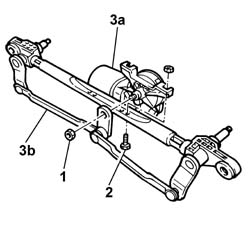

5050B42 windscreen wiper motor - r+r
- Path
- Procedures > 50 AUXILIARY UNITS > 5050 SCREEN WASHERS AND HEADLAMP WASH/WIPE > 5050B windscreen wash/wipe > 5050B42 windscreen wiper motor - r+r
- Kind
- repair procedure (removal / refitting; the operation number is the code)
- Applies to
- all engines; all production periods
- Interactive page
- https://sloeber94.github.io/elrnDB-fPnd/en/#/2752918
Applies to: all engines; all production periods
 Removing
Removing
 Refitting
RefittingDisconnect the battery negative terminal.
5050B34 windscreen wiper arm/s complete with blade - r+r
7210E22 R.R. WINDSCREEN BASE TRIM
5050B38 windscreen wiper assembly - r+r or repair
1. At the bench, undo the nut securing the relay control linkage.
2. Undo the fixing bolts.
3. Detach the windscreen wiper motor (3a) from the relay linkage (3b).

Applies to: all engines; all production periods
Refitting
RemovingPosition the windscreen wiper motor on the relay linkage.
Tighten the fixing bolts.
Position the relay linkage and tighten the fixing nut.
5050B38 windscreen wiper assembly - r+r or repair
7210E22 R.R. WINDSCREEN BASE TRIM
5050B34 windscreen wiper arm/s complete with blade - r+r
Connect the battery negative terminal.
Topics linked from this page (3)
- 5050B34 windscreen wiper arm/s complete with blade - r+r
- 5050B38 windscreen wiper assembly - r+r or repair
- 7210E22 R.R. WINDSCREEN BASE TRIM